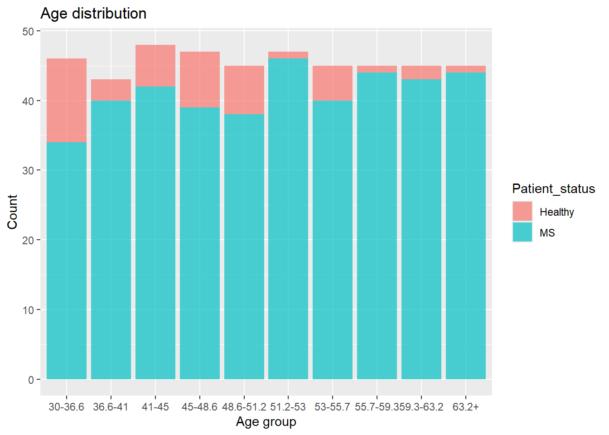
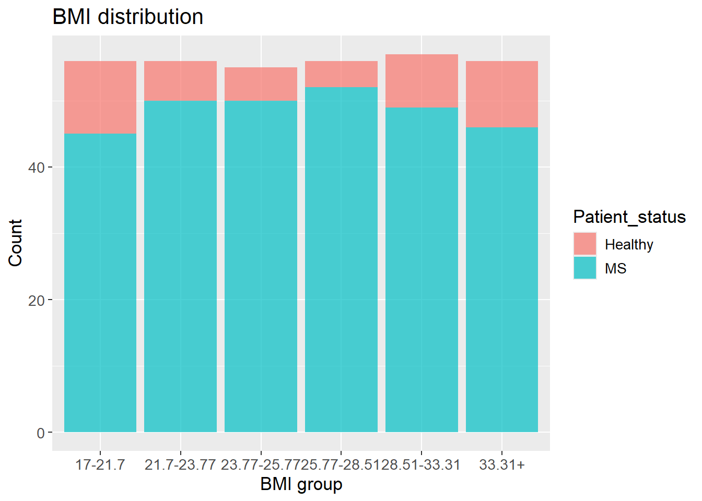

Show the code
set.seed(1337)
library("tidymodels")
tidymodels::tidymodels_prefer()
library("vegan")Set seed and load packages.
set.seed(1337)
library("tidymodels")
tidymodels::tidymodels_prefer()
library("vegan")Load data.
count_matrix <- readr::read_rds("https://github.com/WilliamH-R/BioStatistics/raw/main/data/count_matrix/count_matrix.rds") |>
select(-"NA")
meta <- read.csv(file = "data/metadata.txt") |>
as_tibble() |>
select(Run, chem_administration, ETHNICITY, geo_loc_name,
Host_age, host_body_mass_index, Host_disease, host_phenotype, host_sex) |>
rename(Sample = Run,
Treatment = chem_administration,
Ethnicity = ETHNICITY,
Location = geo_loc_name,
Age = Host_age,
BMI = host_body_mass_index,
Disease_severity = Host_disease,
EDSS = host_phenotype,
Sex = host_sex) |>
mutate(Patient_status = case_when(Disease_severity == "1HealthyControl" ~ "Healthy",
TRUE ~ "MS"),
EDSS = as.factor(EDSS),
EDSS = case_when(is.na(EDSS) & Disease_severity == "1HealthyControl" ~ "-1",
is.na(EDSS) & Disease_severity != "1HealthyControl" ~ "Unknown",
TRUE ~ EDSS),
EDSS = as.factor(EDSS))The p-value is the probability of observing a test statistic as extreme as the one observed, given that the null hypothesis is true. Essentially, a value denoting the probability that the observed data was drawn from the population, if the null hypothesis is true. If multiple samples are tested, the probability of observing a significant result by chance increases which is exactly why correcting for multiple testing is important.
For a simple example, the odds of getting a six with one die is \(1/6\). If multiple dice are thrown, the odds of getting a six increases If multiple tests are performed, the odds of getting a significant result by chance increases. This is why adjusting for multiple testing to avoid false positives is needed.
To setup a scenario where multiple testing becomes relevant, the Age and BMI columns are split into groups. The Wilcoxon Rank Sum test is then performed for each subset comparing healthy vs MS patients. The number of data points affect the power of a test, i.e. the chances of finding a statistically significant difference, if one exist, as it reduces randomness in the data. Therefore, the number of data points in each group should be similar. The groups are defined as follows and the distribution is:
meta <- meta |>
mutate(Age_group = case_when(Age >= 30 & Age < 36.6 ~ "30-36.6",
Age >= 36.6 & Age < 41 ~ "36.6-41",
Age >= 41 & Age < 45 ~ "41-45",
Age >= 45 & Age < 48.6 ~ "45-48.6",
Age >= 48.6 & Age < 51.2 ~ "48.6-51.2",
Age >= 51.2 & Age < 53 ~ "51.2-53",
Age >= 53 & Age < 55.7 ~ "53-55.7",
Age >= 55.7 & Age < 59.3 ~ "55.7-59.3",
Age >= 59.3 & Age < 63.2 ~ "59.3-63.2",
Age >= 63.2 ~ "63.2+"),
BMI_group = case_when(BMI >= 17 & BMI < 21.7 ~ "17-21.7",
BMI >= 21.7 & BMI < 23.77 ~ "21.7-23.77",
BMI >= 23.77 & BMI < 25.77 ~ "23.77-25.77",
BMI >= 25.77 & BMI < 28.51 ~ "25.77-28.51",
BMI >= 28.51 & BMI < 33.31 ~ "28.51-33.31",
BMI >= 33.31 ~ "33.31+"))
meta |>
ggplot(aes(x = Age_group,
fill = Patient_status)) +
geom_histogram(alpha = 0.7,
stat = "count") +
labs(title = "Age distribution",
x = "Age group",
y = "Count")
meta |>
drop_na(BMI) |>
ggplot(aes(x = BMI_group,
fill = Patient_status)) +
geom_histogram(alpha = 0.7,
stat = "count") +
labs(title = "BMI distribution",
x = "BMI group",
y = "Count") +
theme(text=element_text(size=13))
The Shannon Index is then calculated. As mentioned in Section 4.1.2, it is a within sample metric, so which subset a sample belongs to is irrelevant for the calculation. Afterwards, the Wilcoxon Rank Sum test is performed for each subset and gathered:
shannon <- count_matrix |>
column_to_rownames(var = "Sample") |>
diversity(index = "shannon") |>
as_tibble(rownames = "Sample") |>
rename(Shannon = value) |>
left_join(meta,
by = "Sample")
p_value_per_age_group <- shannon |>
group_by(Age_group) |>
summarise(p_value = wilcox.test(Shannon ~ Patient_status)$p.value) |>
pivot_longer(cols = Age_group,
names_to = "Group Name",
values_to = "Group Value")
p_value_per_BMI_group <- shannon |>
drop_na(BMI) |>
group_by(BMI_group) |>
summarise(p_value = wilcox.test(Shannon ~ Patient_status)$p.value) |>
pivot_longer(cols = BMI_group,
names_to = "Group Name",
values_to = "Group Value")
p_values_per_group <- bind_rows(p_value_per_age_group,
p_value_per_BMI_group) |>
select(`Group Name`, `Group Value`, p_value)
p_values_per_group# A tibble: 16 × 3
`Group Name` `Group Value` p_value
<chr> <chr> <dbl>
1 Age_group 30-36.6 0.0192
2 Age_group 36.6-41 0.277
3 Age_group 41-45 0.681
4 Age_group 45-48.6 0.901
5 Age_group 48.6-51.2 0.246
6 Age_group 51.2-53 0.128
7 Age_group 53-55.7 0.562
8 Age_group 55.7-59.3 0.133
9 Age_group 59.3-63.2 0.978
10 Age_group 63.2+ 0.0444
11 BMI_group 17-21.7 0.317
12 BMI_group 21.7-23.77 0.843
13 BMI_group 23.77-25.77 0.0449
14 BMI_group 25.77-28.51 0.0249
15 BMI_group 28.51-33.31 0.955
16 BMI_group 33.31+ 0.239 With a significance level of 0.05, a total of four tests are significant.
alpha <- 0.05
p_values_per_group |>
filter(p_value < alpha)# A tibble: 4 × 3
`Group Name` `Group Value` p_value
<chr> <chr> <dbl>
1 Age_group 30-36.6 0.0192
2 Age_group 63.2+ 0.0444
3 BMI_group 23.77-25.77 0.0449
4 BMI_group 25.77-28.51 0.0249The probability of not finding a false positive is \(1 - \alpha\). When performing multiple tests, the probability of not finding a false positive increases with \((1 - \alpha)^{m}\), where \(m\) is number of tests. Since the probability of finding a false positive and not finding one equals 1, the probability of finding a false positive in \(m\) tests is \(1 - (1- \alpha)^{m}\).
With 16 tests performed, and a significance level of 0.05, the probability of finding at least on false positive is:
\[ P(false\; positive) = 1 - (1 - \alpha)^{m} = 1 - (1 - 0.05)^{16} = 0.56 \]
The probability of finding at least on false positive is also referred to as the Family-Wise Error Rate (FWER).
A way to correct for multiple testing is needed to avoid these high probabilities of false positives. There are several methods for correcting for multiple testing including common methods such as Bonferroni correction and the Benjamini-Hochberg Procedure
The Bonferroni correction is a conservative method, which means that it is less likely to find significant results. To apply Bonferroni correction, the significance level is divided by the number of tests, which would then also affect the FWER (the probability of finding at least one false positive among the significant results). The Bonferroni adjusted significance level is then:
alpha_bonferroni <- alpha / nrow(p_values_per_group)
alpha_bonferroni[1] 0.003125Using this, we actually find no significant results:
p_values_per_group |>
filter(p_value < alpha_bonferroni)# A tibble: 0 × 3
# ℹ 3 variables: Group Name <chr>, Group Value <chr>, p_value <dbl>The FWER becomes:
\[ FWER = 1 - (1 - \frac{\alpha}{m})^{m} = 1 - (1 - \frac{0.05}{16})^{16} = 0.049 \]
The FWER is reduced from 56% to 4.9%, close to the original significance level of 5%. It is then expected to find fewer false positives, also called Type I errors. However, the chance of finding false negatives also increases (referred to as Type II errors). In this case, finding false negatives means accepting the null hypothesis when it was actually false, i.e. not finding a significant result when one exists. In some cases, using a very conservative method is preferred, especially when the cost of a false positive is high.
Another way to control for multiple testing is through the False Discovery Rate (FDR). FDR is the proportion of false positives among the significant results:
\[ FDR = \frac{FP}{FP + TP} \]
Where \(FP = False Positive\) and \(TP = True Positive\). FDR is then an expression for the proportion of false positives among the significant results.
In some cases, a less conservative method than the Bonferroni correction is preferred allowing for more significant hits. This comes at a cost of an increase in false positives. The Benjamini-Hochberg Procedure is such a method - a type of False Discovery Rate (FDR) correction.
Two ways to implement the method exists. Either the significance level is adjusted, or the p-values are adjusted, both giving the same significant hits. The latter is the most common way, but both are introduced.
In general, each p-value is compared to a moving significance level instead of compared to a static value of \(\alpha\), e.g. \(0.05\). The moving significance level is dependent on the rank of the p-value and the number of tests. The lowest p-value gets rank 1, the second lowest rank 2, and so on. With a higher rank, the significance level increases, allowing for more significant hits.
All p-values are sorted in ascending order and ranked as mentioned above. A critical value for each rank is calculated by:
\[ \text{Critical Value} = \frac{k}{m} \cdot \alpha \]
Where \(k\) is the rank of the considered p-value, \(m\) is the number of tests and \(\alpha\) is the significance level. The largest value of \(k\) where the p-value is less than the critical value is found:
\[ \max_{k} \left( p_{(k)} \leq Critical \; Value \right) = \max_{k} \left( p_{(k)} \leq \frac{k}{m} \cdot \alpha \right) \]
All p-values with a rank less than or equal to the largest \(k\) are then considered significant. Note that is is irrelevant if a p-value of lower rank than the rank found from the above, is larger than the critical value. It is still considered significant.
As for the Bonferroni correction, no significant results are found:
p_values_per_group |>
arrange(p_value) |>
mutate(rank = row_number(),
critical_value = (rank / nrow(p_values_per_group)) * alpha,
significant = p_value <= critical_value)# A tibble: 16 × 6
`Group Name` `Group Value` p_value rank critical_value significant
<chr> <chr> <dbl> <int> <dbl> <lgl>
1 Age_group 30-36.6 0.0192 1 0.00312 FALSE
2 BMI_group 25.77-28.51 0.0249 2 0.00625 FALSE
3 Age_group 63.2+ 0.0444 3 0.00938 FALSE
4 BMI_group 23.77-25.77 0.0449 4 0.0125 FALSE
5 Age_group 51.2-53 0.128 5 0.0156 FALSE
6 Age_group 55.7-59.3 0.133 6 0.0188 FALSE
7 BMI_group 33.31+ 0.239 7 0.0219 FALSE
8 Age_group 48.6-51.2 0.246 8 0.025 FALSE
9 Age_group 36.6-41 0.277 9 0.0281 FALSE
10 BMI_group 17-21.7 0.317 10 0.0312 FALSE
11 Age_group 53-55.7 0.562 11 0.0344 FALSE
12 Age_group 41-45 0.681 12 0.0375 FALSE
13 BMI_group 21.7-23.77 0.843 13 0.0406 FALSE
14 Age_group 45-48.6 0.901 14 0.0438 FALSE
15 BMI_group 28.51-33.31 0.955 15 0.0469 FALSE
16 Age_group 59.3-63.2 0.978 16 0.05 FALSE The p-values are again sorted and ranked exactly as before. Apply the following formula to each p-value as an intermediary step:
\[ p_{k,adj} = p_{k} \cdot \frac{m}{k} \]
Where \(m\) is the number of tests, \(k\) is the rank of the considered p-value and \(p_{k}\) is the p-value of said rank. The adjusted p-values can then be found.
Starting with the highest numbered rank, i.e. largest p-value, the adjusted p-value is simply the intermediary value found from the above. For the second highest rank, the adjusted p-value is the minimum of the intermediary value and the adjusted p-value of previously calculated rank. This is repeated for all ranks. The adjusted p-values are then compared to the significance level \(\alpha\), and all p-values less than the significance level are considered significant. Once again, no significant results are found:
p_values_per_group |>
mutate(p_value_adjusted = p.adjust(p = p_value,
method = "BH"),
significant = p_value_adjusted < 0.05)# A tibble: 16 × 5
`Group Name` `Group Value` p_value p_value_adjusted significant
<chr> <chr> <dbl> <dbl> <lgl>
1 Age_group 30-36.6 0.0192 0.180 FALSE
2 Age_group 36.6-41 0.277 0.492 FALSE
3 Age_group 41-45 0.681 0.908 FALSE
4 Age_group 45-48.6 0.901 0.978 FALSE
5 Age_group 48.6-51.2 0.246 0.492 FALSE
6 Age_group 51.2-53 0.128 0.356 FALSE
7 Age_group 53-55.7 0.562 0.818 FALSE
8 Age_group 55.7-59.3 0.133 0.356 FALSE
9 Age_group 59.3-63.2 0.978 0.978 FALSE
10 Age_group 63.2+ 0.0444 0.180 FALSE
11 BMI_group 17-21.7 0.317 0.507 FALSE
12 BMI_group 21.7-23.77 0.843 0.978 FALSE
13 BMI_group 23.77-25.77 0.0449 0.180 FALSE
14 BMI_group 25.77-28.51 0.0249 0.180 FALSE
15 BMI_group 28.51-33.31 0.955 0.978 FALSE
16 BMI_group 33.31+ 0.239 0.492 FALSE sessioninfo::session_info()─ Session info ───────────────────────────────────────────────────────────────
setting value
version R version 4.3.3 (2024-02-29 ucrt)
os Windows 11 x64 (build 22631)
system x86_64, mingw32
ui RTerm
language (EN)
collate English_United Kingdom.utf8
ctype English_United Kingdom.utf8
tz Europe/Copenhagen
date 2024-05-30
pandoc 3.1.11 @ C:/Program Files/RStudio/resources/app/bin/quarto/bin/tools/ (via rmarkdown)
─ Packages ───────────────────────────────────────────────────────────────────
package * version date (UTC) lib source
backports 1.4.1 2021-12-13 [1] CRAN (R 4.3.1)
broom * 1.0.5 2023-06-09 [1] CRAN (R 4.3.3)
cachem 1.0.8 2023-05-01 [1] CRAN (R 4.3.3)
class 7.3-22 2023-05-03 [2] CRAN (R 4.3.3)
cli 3.6.2 2023-12-11 [1] CRAN (R 4.3.3)
cluster 2.1.6 2023-12-01 [2] CRAN (R 4.3.3)
codetools 0.2-19 2023-02-01 [2] CRAN (R 4.3.3)
colorspace 2.1-0 2023-01-23 [1] CRAN (R 4.3.3)
conflicted 1.2.0 2023-02-01 [1] CRAN (R 4.3.3)
data.table 1.15.4 2024-03-30 [1] CRAN (R 4.3.3)
dials * 1.2.1 2024-02-22 [1] CRAN (R 4.3.3)
DiceDesign 1.10 2023-12-07 [1] CRAN (R 4.3.3)
digest 0.6.35 2024-03-11 [1] CRAN (R 4.3.3)
dplyr * 1.1.4 2023-11-17 [1] CRAN (R 4.3.2)
evaluate 0.23 2023-11-01 [1] CRAN (R 4.3.3)
fansi 1.0.6 2023-12-08 [1] CRAN (R 4.3.3)
farver 2.1.1 2022-07-06 [1] CRAN (R 4.3.3)
fastmap 1.1.1 2023-02-24 [1] CRAN (R 4.3.3)
foreach 1.5.2 2022-02-02 [1] CRAN (R 4.3.3)
furrr 0.3.1 2022-08-15 [1] CRAN (R 4.3.3)
future 1.33.2 2024-03-26 [1] CRAN (R 4.3.3)
future.apply 1.11.2 2024-03-28 [1] CRAN (R 4.3.3)
generics 0.1.3 2022-07-05 [1] CRAN (R 4.3.3)
ggplot2 * 3.5.1 2024-04-23 [1] CRAN (R 4.3.3)
globals 0.16.3 2024-03-08 [1] CRAN (R 4.3.3)
glue 1.7.0 2024-01-09 [1] CRAN (R 4.3.3)
gower 1.0.1 2022-12-22 [1] CRAN (R 4.3.1)
GPfit 1.0-8 2019-02-08 [1] CRAN (R 4.3.3)
gtable 0.3.5 2024-04-22 [1] CRAN (R 4.3.3)
hardhat 1.3.1 2024-02-02 [1] CRAN (R 4.3.3)
hms 1.1.3 2023-03-21 [1] CRAN (R 4.3.3)
htmltools 0.5.8.1 2024-04-04 [1] CRAN (R 4.3.3)
htmlwidgets 1.6.4 2023-12-06 [1] CRAN (R 4.3.3)
infer * 1.0.7 2024-03-25 [1] CRAN (R 4.3.3)
ipred 0.9-14 2023-03-09 [1] CRAN (R 4.3.3)
iterators 1.0.14 2022-02-05 [1] CRAN (R 4.3.3)
jsonlite 1.8.8 2023-12-04 [1] CRAN (R 4.3.3)
knitr 1.46 2024-04-06 [1] CRAN (R 4.3.3)
labeling 0.4.3 2023-08-29 [1] CRAN (R 4.3.1)
lattice * 0.22-5 2023-10-24 [2] CRAN (R 4.3.3)
lava 1.8.0 2024-03-05 [1] CRAN (R 4.3.3)
lhs 1.1.6 2022-12-17 [1] CRAN (R 4.3.3)
lifecycle 1.0.4 2023-11-07 [1] CRAN (R 4.3.3)
listenv 0.9.1 2024-01-29 [1] CRAN (R 4.3.3)
lubridate 1.9.3 2023-09-27 [1] CRAN (R 4.3.3)
magrittr 2.0.3 2022-03-30 [1] CRAN (R 4.3.3)
MASS 7.3-60.0.1 2024-01-13 [2] CRAN (R 4.3.3)
Matrix 1.6-5 2024-01-11 [2] CRAN (R 4.3.3)
memoise 2.0.1 2021-11-26 [1] CRAN (R 4.3.3)
mgcv 1.9-1 2023-12-21 [2] CRAN (R 4.3.3)
modeldata * 1.3.0 2024-01-21 [1] CRAN (R 4.3.3)
munsell 0.5.1 2024-04-01 [1] CRAN (R 4.3.3)
nlme 3.1-164 2023-11-27 [2] CRAN (R 4.3.3)
nnet 7.3-19 2023-05-03 [2] CRAN (R 4.3.3)
parallelly 1.37.1 2024-02-29 [1] CRAN (R 4.3.3)
parsnip * 1.2.1 2024-03-22 [1] CRAN (R 4.3.3)
permute * 0.9-7 2022-01-27 [1] CRAN (R 4.3.3)
pillar 1.9.0 2023-03-22 [1] CRAN (R 4.3.3)
pkgconfig 2.0.3 2019-09-22 [1] CRAN (R 4.3.3)
prodlim 2023.08.28 2023-08-28 [1] CRAN (R 4.3.3)
purrr * 1.0.2 2023-08-10 [1] CRAN (R 4.3.3)
R6 2.5.1 2021-08-19 [1] CRAN (R 4.3.3)
Rcpp 1.0.12 2024-01-09 [1] CRAN (R 4.3.3)
readr 2.1.5 2024-01-10 [1] CRAN (R 4.3.3)
recipes * 1.0.10 2024-02-18 [1] CRAN (R 4.3.3)
rlang 1.1.3 2024-01-10 [1] CRAN (R 4.3.3)
rmarkdown 2.26 2024-03-05 [1] CRAN (R 4.3.3)
rpart 4.1.23 2023-12-05 [2] CRAN (R 4.3.3)
rsample * 1.2.1 2024-03-25 [1] CRAN (R 4.3.3)
rstudioapi 0.16.0 2024-03-24 [1] CRAN (R 4.3.3)
scales * 1.3.0 2023-11-28 [1] CRAN (R 4.3.3)
sessioninfo 1.2.2 2021-12-06 [1] CRAN (R 4.3.3)
survival 3.5-8 2024-02-14 [2] CRAN (R 4.3.3)
tibble * 3.2.1 2023-03-20 [1] CRAN (R 4.3.3)
tidymodels * 1.2.0 2024-03-25 [1] CRAN (R 4.3.3)
tidyr * 1.3.1 2024-01-24 [1] CRAN (R 4.3.3)
tidyselect 1.2.1 2024-03-11 [1] CRAN (R 4.3.3)
timechange 0.3.0 2024-01-18 [1] CRAN (R 4.3.3)
timeDate 4032.109 2023-12-14 [1] CRAN (R 4.3.2)
tune * 1.2.1 2024-04-18 [1] CRAN (R 4.3.3)
tzdb 0.4.0 2023-05-12 [1] CRAN (R 4.3.3)
utf8 1.2.4 2023-10-22 [1] CRAN (R 4.3.3)
vctrs 0.6.5 2023-12-01 [1] CRAN (R 4.3.3)
vegan * 2.6-4 2022-10-11 [1] CRAN (R 4.3.3)
withr 3.0.0 2024-01-16 [1] CRAN (R 4.3.3)
workflows * 1.1.4 2024-02-19 [1] CRAN (R 4.3.3)
workflowsets * 1.1.0 2024-03-21 [1] CRAN (R 4.3.3)
xfun 0.43 2024-03-25 [1] CRAN (R 4.3.3)
yaml 2.3.8 2023-12-11 [1] CRAN (R 4.3.2)
yardstick * 1.3.1 2024-03-21 [1] CRAN (R 4.3.3)
[1] C:/Users/Willi/AppData/Local/R/win-library/4.3
[2] C:/Program Files/R/R-4.3.3/library
──────────────────────────────────────────────────────────────────────────────